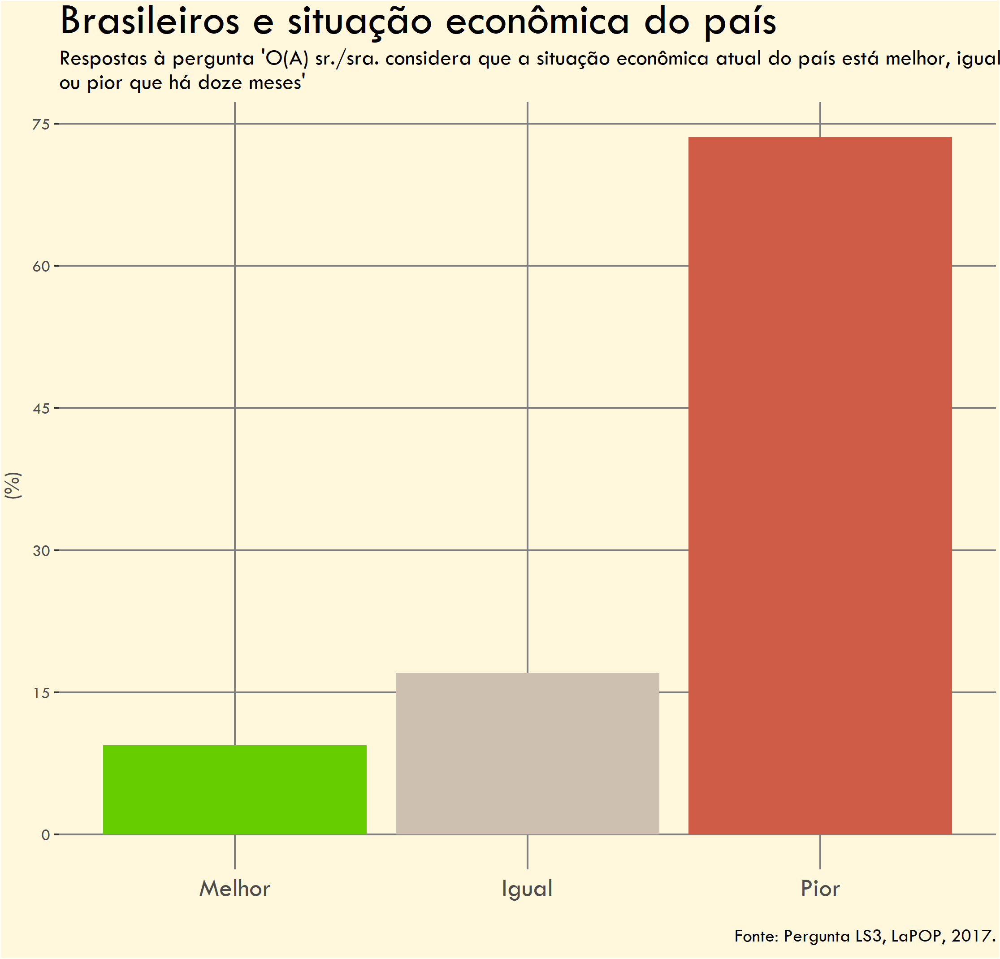
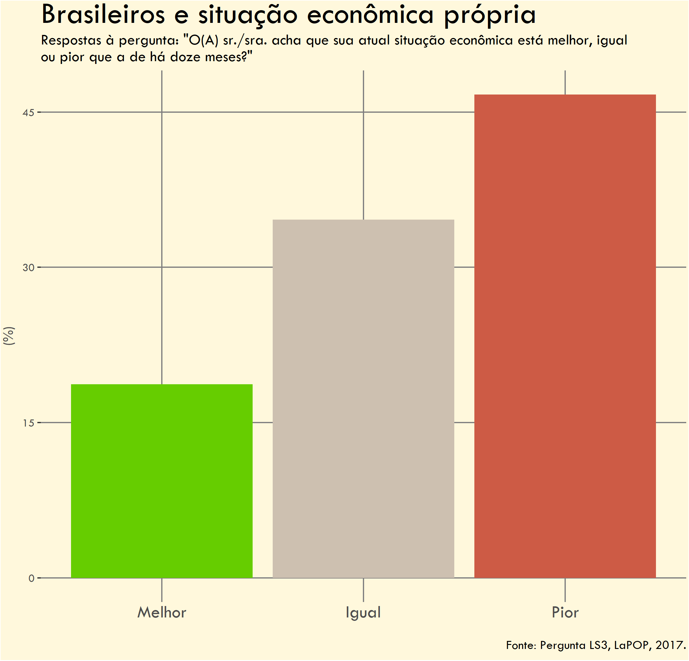
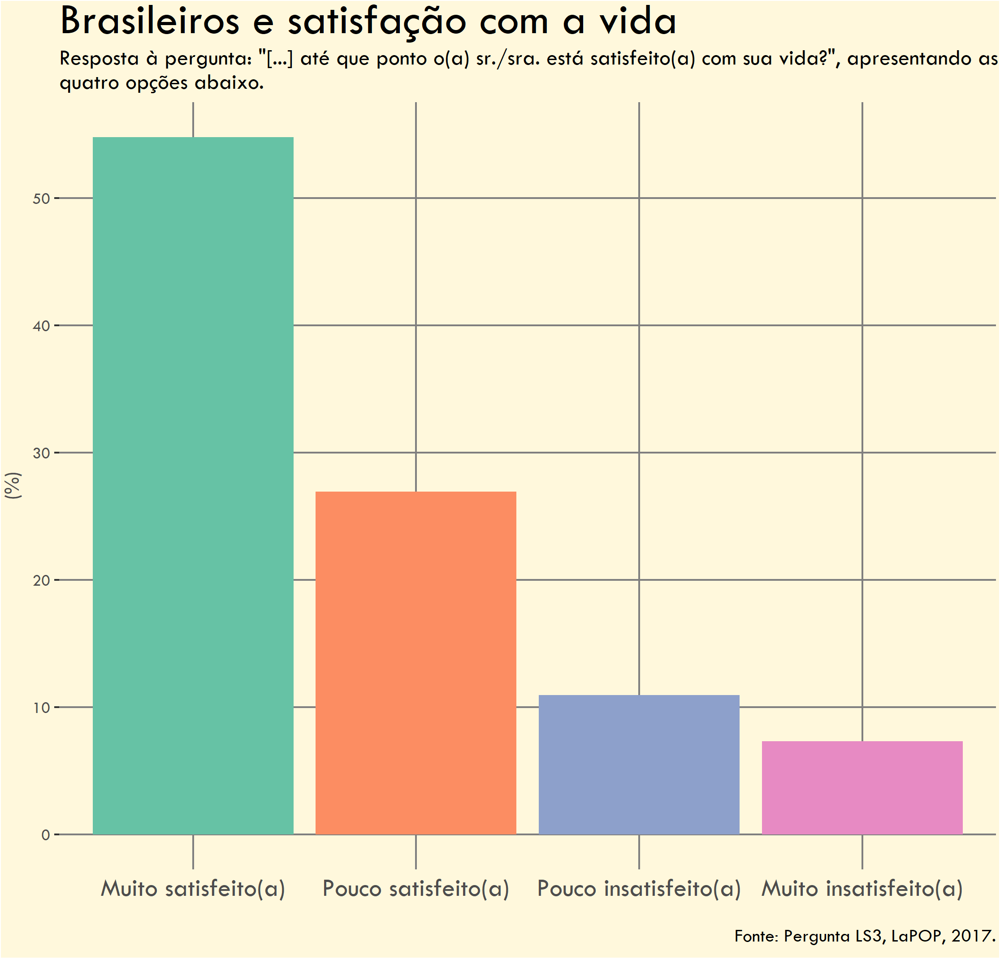
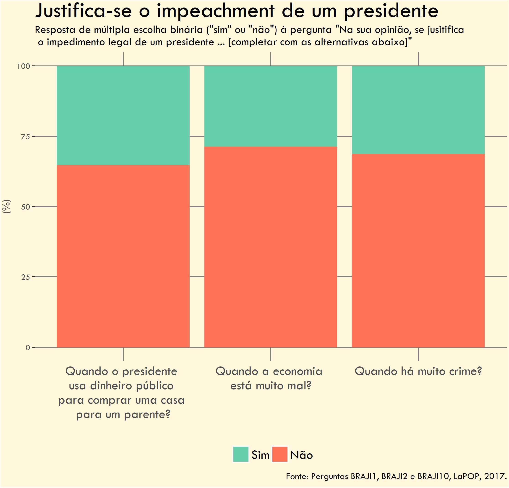
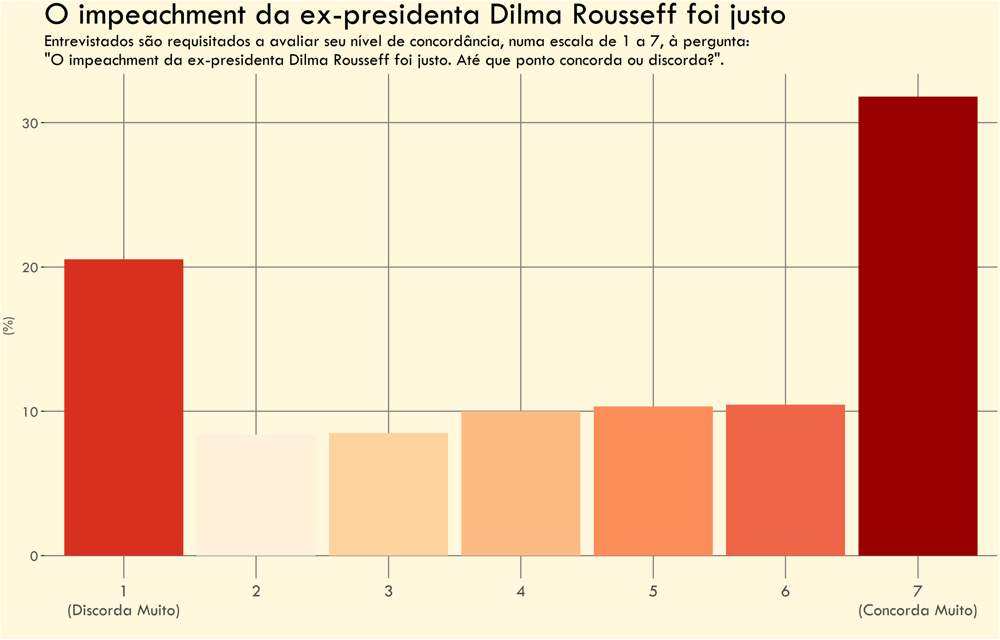

library(dplyr)
library(ggplot2)
library(ggtext)
library(ragg)
import::from(haven, read_dta, as_factor)
import::from(stringr, str_wrap)
import::from(forcats, fct_rev)
import::from(rlang, enquo, as_name)Melhorando visualizações
Neste post analiso alguns gráficos antigos que fiz e tento melhorá-los. Os gráficos são parte de um projeto pessoal antigo, que não chegou a ser publicado. Na época, queria analisar os dados do AmericasBarometer LAPOP, um questionário anual sobre opiniões a respeito da democracia na América Latina. Em particular, a edição de 2017 fez perguntas sobre o impeachment de Dilma Rouseff.
De maneira geral, os principais problemas que notei nos meus gráficos antigos foram:
- Uso excessivo de linhas de grade.
- Uso inconsistente de cores.
- Informações textuais ruins: títulos confusos, barras sem rótulos, etc.
Vou entrar em detalhes sobre os problemas e correções feitos em cada um dos gráficos abaixo.
Dados
Os dados da LAPOP podem ser baixados aqui. Vou usar os dados da edição de 2016/17. Como os dados estão em formato .dta (Stata) é necessário usar o pacote {haven} para importar os dados.
Setup
Pacotes
Os principais pacotes para seguir este post são: {dplyr}, {ggplot2}, {ggtext} e {ragg}. Os demais pacotes ajudam na manipulação de dados.
Funções
Para refazer os gráficos, monto algumas funções simples que limpam e formatam os dados.
Code
# Vetor com tradução de alguns termos que aparecem
# frequentemente nas respostas
xconv <- c(
"Melhor" = "Better",
"Igual" = "Same",
"Pior" = "Worse",
"Muito satisfeito(a)" = "Very Satisfied",
"Um pouco satisfeito(a)" = "Somewhat Satisfied",
"Um pouco insatisfeito(a)" = "Somewhat Dissatisfied",
"Muito insatisfeito(a)" = "Very Dissatisfied"
)
prep_data <- function(var, translate = TRUE, tidy = TRUE) {
dat <- lapop %>%
# Conta o número de obsevações segundo o peso amostral
count({{ var }}, wt = wt) %>%
# Remove observações vazias
filter(!is.na({{ var }})) %>%
# Calcula o share de cada resposta
mutate(share = n / sum(n) * 100) %>%
# Convert as respostas numéricas em texto (i.e. 1 -> Sim, 2 -> Não)
as_factor()
# Opção para traduzir as respostas
if (translate) {
dat[[1]] <- forcats::fct_recode(dat[[1]], !!!xconv)
}
# Opção para facilitar o agrupamento dos dados posteriormente
if (tidy) {
swap_names <- rlang::as_name(rlang::enquo(var))
names(swap_names) <- "name_label"
dat <- dat %>%
mutate(
name_var = rlang::as_name(rlang::enquo(var)),
.before = 1) %>%
rename(all_of(swap_names))
}
return(dat)
}
# Função para formatar números
format_num <- \(x, k = 1) {
format(round(x, k), big.mark = ".", decimal.mark = ",")
}Elementos dos gráficos
Por fim, vou usar uma paleta de cores padronizada, algumas fontes e um tema padrão nas visualizações.
Code
color_palette <- c(
"#1f4e79", # Deep navy blue (primary)
"#2e5984", # Medium navy
"#4472c4", # Professional blue
"#70ad47", # Muted green
"#ffc000", # Warm amber/gold
"#e15759", # Muted red
"#af7aa1", # Soft purple
"#ff9f40", # Warm orange
"#5b9bd5", # Light blue
"#a5a5a5" # Professional gray
)
font_text <- "Rockwell"
font_title <- "Georgia"
theme_barplot <- theme_minimal(base_family = font_text) +
theme(
plot.margin = margin(10, 5, 10, 5),
panel.background = element_rect(fill = "#fefefe", color = "#fefefe"),
plot.background = element_rect(fill = "#fefefe", color = "#fefefe"),
panel.grid.minor = element_blank(),
panel.grid.major.x = element_blank(),
legend.position = "top",
axis.text.x = element_text(size = 12),
plot.title = element_text(family = font_title, size = 18),
plot.subtitle = element_text(color = "gray20"),
plot.caption = element_text(color = "gray40", hjust = 0)
)Nota
Eu não possuo mais o código original, que usei para fazer os gráficos. Contudo, no processo de refazê-los, eu percebi que os números representados estão equivocados1. Os gráficos novos fazem os ajustes necessários para chegar nos valores corretos.
Economia do Brasil
Gráficos originais
O primeiro gráfico mostra a avaliação dos brasileiros a respeito da condição da economia nos últimos doze meses. Os entrevistados tinham três respostas possíveis: a economia está (1) pior; (2) igual; ou (3) melhor do que estava há doze meses atrás.
Vale notar que o estudo foi feito em 2016/17, quando o Brasil ainda estava em recessão econômica.

O segundo gráfico pede ao entrevistado que avalie a sua própria situação econômica. Similarmente, há três opções: a situação econômica individual está pior, igual ou melhor do que estava há doze meses atrás.

O maior problema dos gráficos acima é que eles falham em capturar o que me parece ser o insight central: a discrepância entre a percepção econômica individual e a da economia como um todo.
Problemas
Falta de rótulos de dados - Os valores percentuais não estão visíveis nas colunas, dificultando a comparação dos números.
Uso excessivo de linhas de eixo (grid lines) - Há muitas linhas desnecessárias no fundo do gráfico. Além disso, as linhas verticais cortam e atravessam as colunas o que é visualmente desagradável.
Título e subtítulo genéricos - O título não é chamativo e não comunica o insight principal dos gráficos. O subtítulo é apenas burocrático.
Fundo bege desnecessário - Adiciona ruído visual sem função. Na época, achei que seria melhor do que um fundo branco.
Cores inadequadas - O uso de cores diferentes para cada uma das colunas gera ruído visual e pode sugerir que elas estão representando informações distintas.
Minha intenção era de que as cores fossem “intuitivas”, isto é, verde para simbolizar algo bom (“melhor”), cinza para representar algo neutro (“igual”) e vermelho, algo ruim (“pior”). Contudo, como a mesma variável está sendo representada (e.g. percentual de respondentes).
Data prep
Code
tab_economia <- prep_data(soct2)
tab_pessoal <- prep_data(idio2)
tab <- bind_rows(
list(pais = tab_economia, pess = tab_pessoal),
.id = "group")Resultado
Code
plot_barplot <- function(type = c("sequential", "qualitative")) {
cols <- list(
sequential = color_palette[c(1, 3)],
qualitative = color_palette[c(1, 8)]
)
colors <- cols[[type]]
plot <- ggplot(tab, aes(name_label, share, fill = name_var)) +
geom_col(position = "dodge") +
geom_hline(yintercept = 0) +
geom_text(
aes(y = share + 2.5, label = format_num(share)),
position = position_dodge(width = 0.9),
family = font_text
) +
scale_fill_manual(
name = "",
values = colors,
labels = c("Situação econômica pessoal",
"Situação econômica do país")
) +
labs(
title = "Otimismo pessoal, pessimismo nacional",
subtitle = "Brasileiros veem melhora maior na economia pessoal do que na do país no último ano.\nPercentual de respostas às perguntas(*).",
caption = "Fonte: Lapop (2017) | Perguntas: SOCT2, IDIO2.\n(*)'Você considera que a situação econômica atual do país está ... do que há doze meses?'\n'Você acha que a sua situação econômica está ... do que há doze meses?'",
x = NULL,
y = "(%)"
) +
theme_barplot
return(plot)
}O novo gráfico combina os dois originais para reforçar o insight principal. Colocando os dados, lado a lado, fica mais evidente a discrepância entre as percepções individual e coletiva da economia.
Essas alterações seguem princípios fundamentais do design de informação: eliminar elementos desnecessários, hierarquizar informações e facilitar a compreensão rápida dos dados apresentados.
Uma pequena nota sobre a escolha de cores. Parece haver certo consenso sobre o uso de escalas de cores “qualitativas” para mostrar dados diferentes. Ainda assim, é comum, especialmente em contextos de consultoria e de negócios, ver o abuso de escalas sequenciais de cores, sobretudo de tons de azul2. Parece haver uma impressão generalizada de que tons de azul passam um certo profissionalismo e objetividade.
Quando há poucos grupos (dois ou três), o uso de escalas sequenciais me parece apropriado, mas quando há três ou mais já vale considerar o uso de escalas qualitativas.
Melhorias
Uso consistente de cores. Agora, as cores representam perguntas diferentes, enfatizando a mensagem principal do gráfico.
Os valores das colunas estão sinalizados, facilitando a interpretação dos números.
Título direto, que passa a mensagem do gráfico imediatamente. Subtítulo burocrático movido para o rodapé, onde não compete com a informação principal.
Fundo neutro com apenas linhas de grade horizontais suaves.
Fonte mais clara que melhora a legibilidade em diferentes dispositivos.
Antes e Depois
Satisfação com a Vida
O próximo gráfico mostra o nível de satisfação individual com a própria vida. Há quatro respostas possíveis: (1) muito satisfeito; (2) pouco satisfeito; (3) pouco insatisfeito; e (4) muito insatisfeito.
O gráfico é bastante simples, mas repete os mesmos erros do anterior: cores inconsistentes, linhas de grade em excesso e falta de rótulos de dados.

Problemas
Cores inadequadas - Cada coluna tem uma cor diferente, mesmo representando a mesma variável (e.g. percentual de respondentes). Além disso, a escolha das cores sugere que as colunas representam grupos ou classes diferentes, quando isto não é verdade.
Falta de rótulos de dados - Os valores percentuais não estão visíveis nas colunas.
Uso excessivo de linhas de eixo (grid lines) - Há muitas linhas desnecessárias no fundo do gráfico. Além disso, as linhas verticais cortam e atravessam as colunas o que é visualmente desagradável.
Título e subtítulo genéricos - O título não é chamativo e não comunica o insight principal dos gráficos. O subtítulo é burocrático.
Fundo bege desnecessário - Adiciona ruído visual sem função. Na época, achei que seria melhor do que um fundo branco.
Data Prep
Code
stvida <- prep_data(ls3)
stvida <- stvida %>%
mutate(name_label = forcats::fct_rev(name_label))Resultado
O gráfico final continua simples, mas apresenta as informações de maneira mais elegante e direta. Essencialmente, eu reduzi o ruído visual, diminuindo o uso de cores e de linhas de grade. As colunas horizontais facilitam a leitura dos dados.
É possível omitir inteiramente as linhas de grade, e vejo isto sendo frequentemente feito em contextos de negócios e consultoria. Contudo, para contextos acadêmicos suprimir inteiramente as linhas dos eixos pode ser mal-visto.
Code
plot_no_grid <- ggplot(stvida, aes(name_label, share)) +
geom_col(fill = color_palette[1]) +
geom_text(
aes(y = share + 2, label = format_num(share)),
family = font_text) +
geom_hline(yintercept = 0) +
scale_x_discrete(labels = \(x) stringr::str_wrap(x, 11)) +
scale_y_continuous(expand = expansion(mult = c(0, 0.05))) +
coord_flip() +
labs(
title = "Brasileiros satisfeitos com a vida",
subtitle = "Percentual de entrevistados em relação a satisfação pessoal com sua vida.",
x = NULL,
y = NULL,
caption = "Fonte: LaPop (2017) | Pergunta: LS3."
) +
theme_barplot +
theme(
panel.grid.major.x = element_blank(),
panel.grid.major.y = element_blank(),
axis.text.x = element_blank(),
axis.text.y = element_text(hjust = 0.5)
)
plot_grid <- ggplot(stvida, aes(name_label, share)) +
geom_col(fill = color_palette[1]) +
geom_text(
aes(y = share + 2, label = format_num(share)),
family = font_text) +
geom_hline(yintercept = 0) +
scale_x_discrete(labels = \(x) stringr::str_wrap(x, 11)) +
scale_y_continuous(expand = expansion(mult = c(0, 0.05))) +
coord_flip() +
labs(
title = "Brasileiros satisfeitos com a vida",
subtitle = "Percentual de entrevistados em relação a satisfação pessoal com sua vida.",
x = NULL,
y = "(%)",
caption = "Fonte: LaPop (2017) | Pergunta: LS3."
) +
theme_barplot +
theme(
panel.grid.major.x = element_line(),
panel.grid.major.y = element_blank(),
axis.text.y = element_text(hjust = 0.5)
)Melhorias
Barras horizontais facilitam a leitura dos títulos dos eixos. Além disso, os valores das colunas estão sinalizados, auxiliando na interpretação dos dados.
Título direto, que passa a mensagem do gráfico imediatamente. Subtítulo substitui a pergunta original por um texto mais simples e leve. Pergunta original está indicada no rodapé.
Fundo neutro, cores simples e sem linhas de grade. Resultado é uma visualização elegante.
Fonte mais clara que melhora a legibilidade em diferentes dispositivos.
Antes e Depois
Impeachment
O gráfico abaixo mostra o percentual de brasileiros que considera o impeachment de um presidente justificado (ou não) em diferentes contextos. As barras mostram o percentual de respostas (sim ou não) para cada uma das três perguntas.
Esta visualização compartilha muito dos problemas da último gráfico: título confuso, cores inconsistentes e excesso de linhas de grade.

Problemas
Ausência de rótulos de dados - Não há percentuais nas barras, dificultando a interpretação dos dados.
Legenda - A legenda poderia estar melhor integrada ao gráfico.
Cores contraditórias - Verde para “Sim” (apoio ao impeachment) pode confundir, já que verde geralmente indica algo positivo. Vale notar que as cores usadas são as cores padrão do {ggplot2} o que pode sugerir um “gráfico amador” para quem tem maior familiaridade com R.
Título confuso - Não comunica insight algum; parece uma frase inacabada.
Fundo bege desnecessário - Adiciona ruído visual sem função.
Ordem não intuitiva - As categorias não seguem uma lógica clara de ordenação.
Uso excessivo de linhas de eixo (grid lines) - Há muitas linhas desnecessárias no fundo do gráfico. Além disso, as linhas verticais cortam e atravessam as colunas o que é visualmente desagradável.
Data Prep
Não há nada muito notável na preparação dos dados. Vale somente notar que eu crio dois grupos vazios que servem como placeholders das caixas de texto.
Code
impeach_casa <- prep_data(braji1, translate = FALSE)
impeach_econ <- prep_data(braji2, translate = FALSE)
impeach_crim <- prep_data(braji10, translate = FALSE)
impeach <- bind_rows(
impeach_casa, impeach_econ, impeach_crim
)
impeach <- bind_rows(
impeach, tibble(name_var = c("x1", "x2"), share = NA, name_label = NA)
)
impeach <- impeach %>%
mutate(
name_var = factor(
name_var,
levels = c("x1", "braji1", "braji10", "braji2", "x2"))
)
text_x <- c(
"",
"Quando o presidente usa o dinheiro público para comprar uma casa para um parente",
"Quando há muito crime",
"Quando a economia está muito mal",
""
)
txlab1 <- "Entre os entrevistados, <b style='color:#e15759'>56,4% afirmam</b> que o<br><b style='color:#e15759'>impeachment do presidente NÃO é justificado</b><br>quando a economia está muito mal."
txlab2 <- "Quase <b style='color:#4472c4'>51% concorda</b> que o <b style='color:#4472c4'>impeachment é justificado</b> <br>quando o presidente usa dinheiro público para comprar<br>uma casa para um parente."Resultado
Code
plot_impeach <- ggplot(impeach, aes(name_var, share, fill = name_label)) +
geom_col(
position = position_fill(),
width = 0.8
) +
geom_text(
aes(label = format_num(share)),
family = font_text,
size = 4,
position = position_fill(vjust = 0.5)
) +
annotate(
geom = "richtext",
x = "x2",
y = 0.05,
label = txlab1,
fill = "#fefefe",
label.color = "gray20",
hjust = 0,
family = font_text
) +
annotate(
geom = "richtext",
x = "x1",
y = 0.25,
label = txlab2,
fill = "#fefefe",
label.color = "gray20",
hjust = 0,
family = font_text
) +
scale_fill_manual(name = "", values = color_palette[c(3, 6)]) +
scale_x_discrete(labels = stringr::str_wrap(text_x, 21)) +
scale_y_continuous(expand = expansion(mult = 0)) +
coord_flip() +
labs(
title = "Irresponsabilidade fiscal justifica impeachment",
subtitle = "Percentual de entrevistados que consideram o impeachment do presidente\njustificado (ou não) em diferentes cenários hipotéticos.",
caption = "Fonte: LaPop (2017) | Perguntas: BRAJI1, BRAJI2, BRAJI10.",
x = NULL,
y = NULL
) +
theme_barplot +
theme(
plot.margin = margin(10, 15, 10, 15),
panel.grid = element_blank(),
legend.position = "none",
axis.text.x = element_blank(),
axis.text.y = element_text(hjust = 0)
)
plot_impeachAproveitando o fato de que o gráfico aborda um tema político, eu explorei as cores e o posicionamento dos dados para tornar a sua leitura mais intuitiva.
Como há apenas duas opções de resposta, eu decidi omitir a legenda de cores genérica (“Sim” e “Não”) e usar caixas de texto com cores sugestivas para explicar o gráfico naturalmente. O gráfico está agora na horizontal, o que facilita a leitura do texto dos eixos e torna a interpretação do gráfico mais intuitiva: esquerda x direita (ao invés de baixo x cima).
No contexto do impeachment da ex-presidente Dilma Roussef, acredito que faça sentido representar o seu apoio (i.e. contra o impeachment) com barras vermelhas (mesma cor do seu partido) e à esquerda (alinhamento ideológico).
O título agora remete ao principal motivo que justificou o impeachment da presidente à época, i.e. as pedaladas fiscais3.
Melhorias
Caixas de texto - ajudam a contar a história e “explicam” a legenda de maneira intuitiva. O uso das cores junto com o texto indica que vermelho representa o percentual dos que não considera justificado.
Alinhamento horizontal e ordem dos grupos - O alinhamento horizontal das barras facilita a leitura do texto e dos títulos dos eixos. Além disso, a ordem (esquerda x direita) é intuitiva dentro do contexto político.
Cores intencionais - O gráfico original tinha cores genéricas e confusas. O gráfico revisado aproveita o contexto político
Antes e Depois
Impeachment 2
O gráfico abaixo mostra o quanto os entrevistados consideraram justo o impeahment da ex-presidente Dilma Rousseff. Sem dúvidas, este é o gráfico mais criminoso. Ele comete todos os erros dos gráficos anteriores, mas tem o pior uso de cores. Uma das cores inclusive se parece muito com o tom de bege do fundo.

O dado sendo apresentado é um tanto complexo. Como a resposta à pergunta é avaliada numa escala numérica é preciso traduzir isto para o leitor final. Seria possível “traduzir” a escala (e.g. ‘discorda muito’, ‘discorda’, ‘discorda um pouco’, etc.), mas isto implica em inventar uma correspondência que não existe na pesquisa original.
A mensagem central dos dados resume-se à discordância ou concordância com a pergunta. Contudo, resumir os dados em apenas três grupos (‘concordo’, ‘discordo’, ‘neutro’) removeria a nuance da escala numérica.
Problemas do gráfico
Falta de rótulos de dados - Os valores percentuais não estão visíveis nas colunas, dificultando a comparação dos números.
Agregado ou desagregado? - Além de não mostrar os valores percentuais individuais, é difícil ter uma noção de quantos concordam e quantos discordam.
Cores inadequadas - O uso de cores diferentes para cada uma das colunas gera ruído visual e pode sugerir que elas estão representando informações distintas. Neste caso, a escolha da paleta foi bastante infeliz, pois alguns tons se assemelham à cor do fundo, dificultando a leitura do gráfico.
Uso excessivo de linhas de eixo (grid lines) - Há muitas linhas desnecessárias no fundo do gráfico. Além disso, as linhas verticais cortam e atravessam as colunas o que é visualmente desagradável.
Título e subtítulo genéricos - Além de não ser chamativo, o título é confuso, pois parece estar fazendo uma afirmativa. O subtítulo não é ruim, mas a referência à pergunta original é um pouco burocrática.
Fundo bege desnecessário - Adiciona ruído visual sem função.
Data Prep
Para montar o novo gráfico, eu agrego os valores em três grupos: concordo, discordo e neutro. Estes valores serão apresentados junto com todas as colunas originais.
Code
imp_just <- prep_data(braimp17, translate = FALSE)
imp_just <- imp_just |>
mutate(
resp_num = case_when(
name_label == "Strongly Disagree" ~ 1,
name_label == "Strongly Agree" ~ 7,
TRUE ~ as.numeric(as.character(name_label))
),
grouping = case_when(
name_label %in% c("Strongly Disagree", "2", "3") ~ "Discorda",
name_label %in% c("Strongly Agree", "5", "6") ~ "Concorda",
name_label == "4" ~ "Neutro"
),
grouping = factor(grouping, levels = c("Concorda", "Neutro", "Discorda"))
)
tab_agg <- imp_just %>%
summarise(
total = sum(share), .by = "grouping"
)Como este gráfico possui vários elementos acessórios (linhas, texto, etc.) eu considero melhor organizar cada um deles em tabelas distintas. Isto melhora a organização do código e evita a repetição de linhas.
Code
# Create bracket data
brackets <- tibble(
x = c(7, 7, 5, 3, 3, 1),
xend = c(5, 7, 5, 1, 3, 1),
y = c(45, 45, 45, 45, 45, 45) - 9,
yend = c(45, 43, 43, 45, 43, 43) - 9
)
dashed_lines <- imp_just %>%
filter(resp_num %in% c(1, 3, 5, 7)) %>%
select(resp_num, share) %>%
mutate(y = share + 1, yend = 33)
tab_agg <- tab_agg %>%
mutate(
label = paste0(format_num(total), "%")
)
text_labels <- tibble(
x = c(2, 6),
y = c(42, 42),
label = c(
glue::glue("Total que\ndiscorda: {tab_agg[1, ]$label}"),
glue::glue("Total que\nconcorda: {tab_agg[3, ]$label}")
)
)
xlabels <- c(
"(Discorda)\n1",
as.character(2:6),
"7\n(Concorda)"
)Resultado
Code
plot_single_color <- ggplot(imp_just, aes(resp_num, share)) +
geom_col(fill = color_palette[1]) +
geom_hline(yintercept = 0) +
geom_text(
aes(y = share - 2, label = format_num(share)),
color = "white",
family = font_text,
size = 3
) +
geom_text(
data = text_labels,
aes(x, y, label = label),
family = font_text,
size = 4
) +
geom_segment(
data = brackets,
aes(x = x, xend = xend, y = y, yend = yend),
color = "black"
) +
geom_segment(
data = dashed_lines,
aes(x = resp_num, xend = resp_num, y = y, yend = yend),
color = "gray20",
linetype = 2
) +
coord_flip() +
scale_x_reverse(breaks = 1:7, labels = xlabels) +
scale_y_continuous(
expand = expansion(mult = c(0, 0.05)),
limits = c(NA, 50)) +
labs(
x = NULL,
y = NULL,
title = "Maioria concorda com o impeachment de Dilma",
subtitle = "Entrevistados são requisitados a avaliar seu nível de concordância com o impeachment numa\nescala de 1 a 7. Percentual de respostas.",
caption = "Fonte: LaPop (2017) | Pergunta: BRAIMP17"
) +
theme_barplot +
theme(
panel.grid.major.y = element_blank(),
axis.text.x = element_blank()
)
plot_div_color <-
ggplot(imp_just, aes(resp_num, share)) +
geom_col(aes(fill = grouping)) +
geom_hline(yintercept = 0) +
geom_text(
aes(x = resp_num, y = share - 2, label = format_num(share)),
color = "white",
family = font_text,
size = 3,
inherit.aes = FALSE
) +
geom_text(
data = text_labels,
aes(x, y, label = label),
family = font_text,
size = 4,
inherit.aes = FALSE
) +
geom_segment(
data = brackets,
aes(x = x, xend = xend, y = y, yend = yend),
color = "black",
inherit.aes = FALSE
) +
geom_segment(
data = dashed_lines,
aes(x = resp_num, xend = resp_num, y = y, yend = yend),
color = "gray20",
linetype = 2,
inherit.aes = FALSE
) +
coord_flip() +
scale_x_reverse(breaks = 1:7, labels = xlabels) +
scale_y_continuous(
expand = expansion(mult = c(0, 0.05)),
limits = c(NA, 50)) +
scale_fill_manual(values = color_palette[c(3, 10, 6)]) +
guides(fill = "none") +
labs(
x = NULL,
y = NULL,
title = "Maioria concorda com o impeachment de Dilma",
subtitle = "Entrevistados são requisitados a avaliar seu nível de concordância com o impeachment numa\nescala de 1 a 7. Percentual de respostas.",
caption = "Fonte: LaPop (2017) | Pergunta: BRAIMP17"
) +
theme_barplot +
theme(
panel.grid.major.y = element_blank(),
axis.text.x = element_blank()
)Como comentado acima, este não é um dado particularmente simples de se visualizar. O gráfico final combina a visão desagregada junto com a mais agregada. O título agora reflete a mensagem central dos dados.
Acredito que o mais adequado seja remover completamente as cores e manter uma única cor em todas as barras. Contudo, considerando que se trata de dados “divergentes”, pode-se usar a mesma paleta de azul e vermelho do outro gráfico sobre impeachment. O cinza fica como tom neutro no meio do gráfico.
A escala divergente funciona bem quando complementada com o gráfico anterior, já que há uma preservação da linguagem visual (azul x vermelho). Contudo, se o gráfico estiver sozinho, acredito que o melhor seja manter todas as barras com a mesma cor.
Melhorias
Cores consistentes e fundo neutro sem linhas de grade.
Rótulos numéricos facilitam a comparação e permitem ter a visão completa da informação.
Barras horizontais facilitam a leitura dos dados.
Título destaca o insight principal.
Antes e Depois
Referências e posts relacionados
Footnotes
Como referência, a LaPop usa uma amostra estratificada que exige o uso de pesos amostrais para estimar estatísticas descritivas. Mais detalhes podem ser vistos na metodologia da pesquisa. Como os gráficos estão fazendo análises simples (mesmo ano, mesmo país) basta usar os pesos da coluna
wtna contagem dos dados. No R, isto pode ser feito mais formalmente usando o pacotesurveyesvydesign(ids = ~upm, weights = ~wt, strata = ~estratopri, data = lapop)quando o cálculo de intervalos de confiança é necessário. Quando é preciso apenas a estimativa pontual, pode-se usar alternativas comodplyr::count(variavel, weight = wt).↩︎Esta preferência pelo azul não é coincidência. Estudos em psicologia das cores mostram que o azul é associado à confiança, estabilidade e competência - qualidades desejáveis em apresentações corporativas.↩︎
O espaço limitado do gráfico muitas vezes exige um esforço de edição que pode beirar o sensacionalismo ou clickbait. Talvez um título mais completo seria: “Para população brasileira, uso indevido do dinheiro público justifica impeachment do presidente”. Contudo, acredito que o título atual seja um meio-termo razoável.↩︎